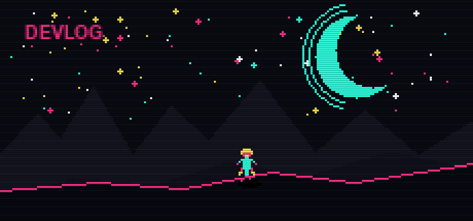

> ABOUT
Your daily signal through the indie noise. Every morning, CyberCycho scans itch.io and the wider indie scene — platform sales, standout bundles, notable devlogs, and the releases worth your wishlist. Hand-curated, always sourced, zero filler. Just the games that matter.
EST. 2026-07-03 // UPDATED DAILY
> ITCH.IO NEWS
-
 [ PLATFORM ]
itch.io Changelog: Sale Explorer, Patreon Integration & More
[ PLATFORM ]
itch.io Changelog: Sale Explorer, Patreon Integration & More
itch.io founder leafo posted a changelog on July 2, 2026 recapping quietly-shipped platform features: a new Sale Explorer for browsing discounts, a revamped bundle hosting system, a Jam Theme Editor, and Patreon integration that lets creators grant patrons access to their itch.io pages. Source: itch.io blog
-
 [ SALE ]
itch.io Summer Sale 2026
[ SALE ]
itch.io Summer Sale 2026
Live through July 6, 2026, with 30,000+ projects on sale — 4,500+ games, 14,000+ game assets, and 2,700+ tabletop games. Source: itch.io blog
-
[ BUNDLE ]
The Power of Pride Bundle 2026
284 queer creators, 396 projects (games, ezines, art collections), available through July 6, 2026 — $60 bundle or $10 pay-what-you-can tier, with no generative AI content included. Source: Shacknews
-

[ DEVLOG ] Blackmoon Prophecy RemakeOfficially completed and released, per itch.io devlogs as of July 1, 2026. Source: itch.io devlogs
> INDIE GAME RELEASES — JULY 2026
-
 JUL 01 Cat Squeeze
JUL 01 Cat SqueezePuzzle game guiding a cat through pipes and mazes.
-
 JUL 07 Moonlight Peaks
JUL 07 Moonlight PeaksCozy life-sim where you play a vampire growing crops and brewing potions.
-
 JUL 09 Cat Mail Co.
JUL 09 Cat Mail Co.Cozy cat post-office sim by Maracas Studio — sort and deliver parcels by day, let the moon reveal hidden truths about packages at night. Steam
-
 JUL 13 Ascend to ZERO
JUL 13 Ascend to ZERORoguelike where mastering time itself is the key to survival.
-
 JUL 14 D-topia
JUL 14 D-topiaPuzzle game set in an AI-curated world with slower, relaxed vibes.
-
 JUL 15 The Mound: Omen of Cthulhu
JUL 15 The Mound: Omen of Cthulhu4-player co-op cosmic horror from ACE Team (Zeno Clash) — conquistador-era expeditions where creeping madness makes allies look like monsters. PC/PS5/Xbox Series. Gematsu
-
 JUL 16 The Mermaid Mask
JUL 16 The Mermaid MaskMurder-mystery sequel to Tangle Tower (2019) by SFB Games, releasing on PC/PS5/Switch/Switch 2.
-
 JUL 20 Raccoons to Riches
JUL 20 Raccoons to RichesRoguelike deckbuilder starring a money-obsessed raccoon.
-
 JUL 23 Gurei
JUL 23 GureiBoss-rush game where defeating enemies lets you steal their powers.
-
 JUL 30 Kusan: City of Wolves
JUL 30 Kusan: City of WolvesTop-down shooter with a Hotline Miami vibe.
-
 JUL 31 Corsair Cove
JUL 31 Corsair CovePirate-themed city builder turning a deserted island into a settlement.
Release list sources: Green Man Gaming — Indie Game Release Round-Up, July 2026, plus per-entry Steam / press links above. Game artwork: official Steam store assets, © their respective developers and publishers.